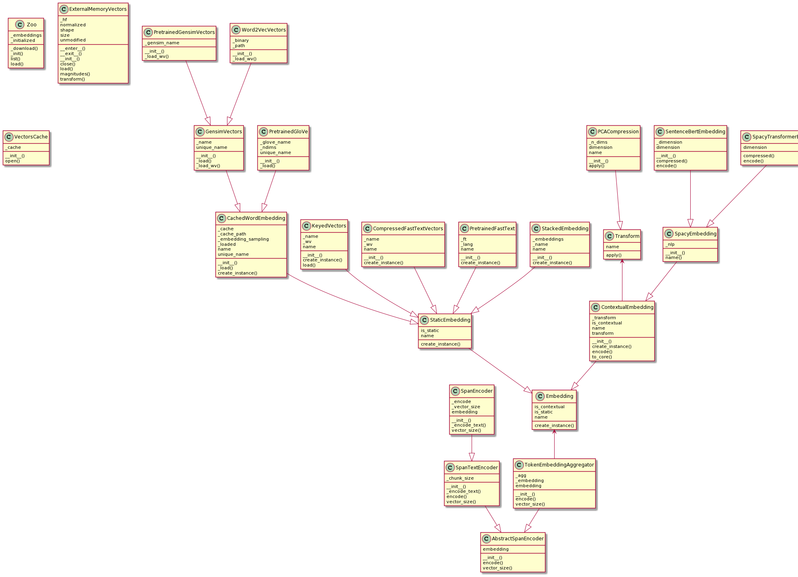

Embeddings
Token Embeddings vs. Document Embeddings
Note that the term embedding in this whole section always refers to
token embeddings. Document or sentence embeddings are not handled
via the Embedding class in the Vectorian. In order to use the latter,
use a SpanEmbeddingSimilarity together with an Index, see the
sections on Span Similarity and Index.
Overview
Here is an overview of the different classes the API offers to load and specify embeddings:

The following sections will explain the different kinds of classes in detail.
The Zoo
One of the easiest way to create an Embedding instance is to use the
Zoo class, which offers a small set of pretrained embeddings. Note that
Vectorian's model zoo is not aimed at offering a wide variety of currently
available embeddings and is more geared towards enabling quick and easy
experimentation within memory-constrained environments like Binder by
offering compressed versions of common standard embeddings.
To get a list of all available models, call
vectorian.embeddings.Zoo.list()
To load one embedding by its name, e.g. fasttext-en-mini use:
fasttext_mini = Zoo.load('fasttext-en-mini')
Static Embeddings
Static Embeddings are embeddings that map one token string to one embedding vector, independent of the token's occurence in a text.
All implementations derive from StaticEmbedding. The Vectorian supports
two kinds of flavors:
- keyed values (e.g. Word2vec, GloVe, Numberbatch)
- variants of fastText
Whereas the first variant is a simple key-value mapping, the structure of fastText embeddings is more complex (and powerful) due to its n-gram representation.
A second criterion when loading embeddings is whether you use a standard pretrained embedding from an external provider (such as Facebook), or whether you want to load embeddings you trained yourself. In the first case, the Vectorian API takes care of downloading and caching the embedding data in order to make it easy to use for new users.
Keyed Values
Pretrained keyed values embeddings can be loaded either via Vectorian's
Zoo or via PretrainedGensimVectors, if the embedding is available
through gensim-data (see https://radimrehurek.com/gensim/downloader.html).
For GloVe, there is also the PretrainedGloVe class.
To load any other keyed values embedding, use the Word2VecVectors class.
It takes a unique name and a path to a Word2vec formatted
file. Note that the contents of that file need not originate from Word2vec
and can contain any key-value-form embedding such as GloVe or Numberbatch.
fastText
PretrainedFastText offers easy access to the official pretrained
fastText embbeddings offered by Facebook (see https://fasttext.cc/).
Simply specify the desired language code in the constructor and Vectorian
will download the necessary data. Note that these downloads are large and
will have memory requirements that are beyond what is provided by Binder.
CompressedFastTextVectors allows the loading of fastText data that has
been compressed via https://github.com/avidale/compress-fasttext. This
approach can reduce the memory requirements of fastText by several magnitudes
without a huge loss in quality.
Sampling
A small but important topic with static topic is how embedding vectors are
to be chosen given various tokens that have been normalized to the same
base form. The approach taken is refered to as sampling in the Vectorian
and can be configured in various Embedding classes (see the embedding_sampling
argument in the PretrainedGensimVectors constructor for example).
Let us assume we have two tokens, "behold" and "Behold", that have both been
normalized to the same form "behold" through a lowercase-rule in the
Session's normalizers settings (see Session). The
Vectorian offers two options how to deal with this:
- By default (using the "nearest" setting for
sampling), the Vectorian will choose the embedding of the nearest key, namely "behold", to look up the vector for both tokens. Thus, both "behold" and "Behold" will get the embedding vector that is given for "behold" in the embedding data. - If specifying the "average" setting for
sampling, the Vectorian will look up the vectors for both "behold" and "Behold", then average these, and then apply this averaged vector to both "behold" and "Behold".
Note that sampling will not be an issue if no token text normalization
is specified in the Session (i.e. if there are no unified tokens).
Contextual Embeddings
Difference from Static Embeddings
In contrast to static embeddings, contextual embeddings provide every token instance in a text with a potentially different embedding vector. For example, in "to be or not to be", the tokens "to" and "be" might get different embeddings depending on their occurrence in the phrase. Thus, the bold "to" in "to be or not to be" might be different from the bold "to" in "to be or not to be".
Static embeddings on the other hand would map "to" to exactly one (static) vector all the time.
Contextual embeddings are often generated from network architectures such as ELMO, BERT and various newer Transformer-based architectures.
Usage in the Vectorian
To use contextual embeddings in the Vectorian, there are two options that provide access to embeddings computed through a spaCy pipeline:
SpacyVectorEmbeddinguses thevectorattribute in spaCy'sTokenclass to obtain embedding vectors. This works well with dedicated packages auch as the spaCy Sentence-BERT wrapper (see https://pypi.org/project/spacy-sentence-bert/).SpacyTransformerEmbeddingobtains an embedding vector by access spaCy's internal Transformer state (when using a Transformer model such asen_core_web_trf).
The second option is highly experimental and has a number of shortcomings (for example, it is debatable if the embeddings acquired in this way are even suitable as contextual embeddings since there is no control over the Transformer layers which contribute to them). In general, the first option is to be preferred.
Compression
It can be useful to compress contextual embeddings, since they can take up a large amount of disk space (this can also impact search performance). Note that compression is always a tradeoff between size and quality.
To obtain a PCA-compressed version of a contextual embedding, use the
compressed method inside the embedding's class. The Vectorian will then
automatically take care of compressing queries that run on those embeddings
in the correct way.
Stacking Embeddings
A common technique to combine the benefits of different existing embeddings into one new embedding is to stack them (i.e. appending their vectors).
In the Vectorian, this can be achieved by using the StackedEmbedding class
and providing the embeddings you want to stack.
At the time of this writing, this is only supported for static embeddings.